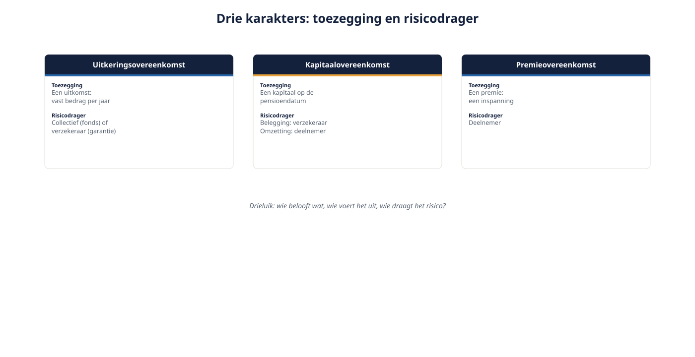
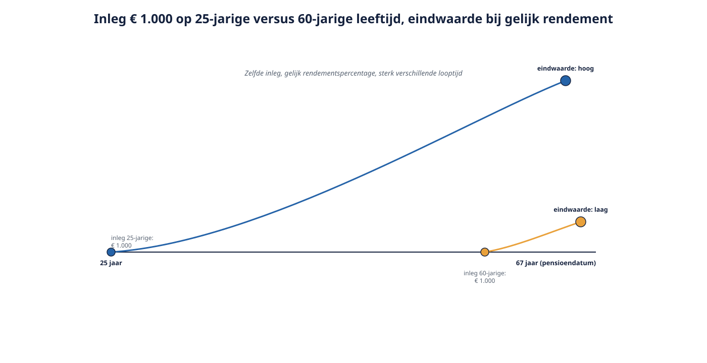

Deel 3 — Slidedeck
Soorten pensioenovereenkomsten, oud en nieuw · 29 slides
Slide 1 — Titel
Deel 3: Soorten pensioenovereenkomsten Wat is er toegezegd, en wie draagt het risico?
Slide 2 — Terugblik
Deel 1: de kaart · Deel 2: de driehoek Vandaag: de inhoud van de toezegging
Slide 3 — Drie klassieke karakters

Uitkering · Kapitaal · Premie
Slide 4 — De uitkeringsovereenkomst
- Toegezegd: een bedrag per jaar
- Eindloon of middelloon
- Herkenbaar aan een opbouwpercentage (1,738%)
- Risico: collectief (fonds) of verzekeraar (garantie)
Slide 5 — De kapitaalovereenkomst
- Toegezegd: een kapitaal op einddatum
- Beleggingsrisico bij de verzekeraar
- Renterisico bij omzetting: bij de deelnemer
- Nagenoeg verdwenen, nog in oude polissen
Slide 6 — De premieovereenkomst
- Toegezegd: een inleg
- Uitkomst hangt af van rendement, kosten, rente
- Risico bij de deelnemer
Slide 7 — Terug naar het drieluik
Uitkering = belofte over de uitkomst Premie = belofte over de inspanning
Slide 8 — Opdracht 3.1
Vijf regelingsteksten, typeer ze Individueel, 8 minuten
Slide 9 — De staffel
21–24 jaar: 8,4% 25–29 jaar: 9,7% … 65+: 26,1%
Slide 10 — Waarom liep die op?

Tijd doet rendement — een jonge euro hoeft niet zo groot te zijn
Slide 11 — De staffel was consistent
Doel: gelijke jaarlijkse opbouw De staffel maakte de premie daaraan gelijkwaardig Docentnotitie: niet “oneerlijk” — het doel is veranderd, niet de rekenkunde.
Slide 12 — Het nieuwe doel
Doel onder de Wtp: gelijke jaarlijkse inleg Daarmee vervalt de grond voor de staffel
Slide 13 — En wie betaalt dat?
Wie halverwege overstapt, mist het hoge staffeldeel dat hij “tegoed” had Docentnotitie: dit is de kiem van deel 6 en 7. Niet nu uitwerken.
Slide 14 — Opdracht 3.3
Van Doorn: gemiddelde leeftijd 38 → 46 Wat deed dat met de last? En met een vlakke premie?
Slide 15 — De vraag van de directeur
“Wordt pensioen nu goedkoper?” Antwoord zonder compensatie = onvolledig antwoord
Slide 16 — Wat blijft er over onder de Wtp?

- Solidaire premieregeling
- Flexibele premieregeling
- Premie-uitkeringsovereenkomst (alleen verzekeraars)
Slide 17 — Wat ze gemeen hebben
- Vlakke premie
- Persoonlijk pensioenvermogen Docentnotitie: eerst de overeenkomst, dan pas de verschillen.
Slide 18 — Solidaire premieregeling
- Collectief belegd, persoonlijk gereserveerd
- Toedelingsregels per leeftijdsgroep
- Verplichte solidariteitsreserve
- Geen individuele beleggingskeuze
Slide 19 — Flexibele premieregeling
- Lifecycle, meestal keuze uit risicoprofielen
- Optionele risicodelingsreserve
- Op pensioendatum: vast of variabel
- Gebruikelijk bij verzekeraars en PPI’s
Slide 20 — Premie-uitkeringsovereenkomst
- Premie wordt direct omgezet in aanspraken
- Geen kapitaal op pensioendatum
- Alleen verzekeraars — want langleven- en renterisico
Slide 21 — Waarom alleen verzekeraars?
Garanderen = risico overnemen = kapitaal aanhouden PPI mag dat niet · fonds kent de vorm niet
Slide 22 — Solidair versus flexibel
| Solidair | Flexibel | |
|---|---|---|
| Beleggingskeuze | nee | meestal wel |
| Reserve | verplicht | optioneel |
| Uitkering | variabel | vast of variabel |
Slide 23 — Twee hardnekkige misvattingen
- “Solidair = geen eigen potje” — onjuist, beide kennen een persoonlijk vermogen
- “Solidair = zeker” — stabieler, niet gegarandeerd
Slide 24 — Opdracht 3.4
Vier situaties: solidair, flexibel of iets anders? Docentnotitie: situatie d is de test — daar is de regelingsvorm niet de eerste vraag.
Slide 25 — Typeren in vier signalen
- Opbouwpercentage → uitkering
- Percentage per leeftijdsklasse → staffel, niet conform
- Eén percentage voor iedereen → vlak, verder controleren
- Gegarandeerd eindkapitaal → kapitaalovereenkomst
Slide 26 — De kernzin van vandaag
Een vlakke premie is nodig voor Wtp-conformiteit, maar niet genoeg.
Slide 27 — De gevaarlijkste zin in de markt
“Wij hebben al een beschikbarepremieregeling, dus wij zijn al Wtp-proof.” Formuleer je correctie hardop
Slide 28 — Opbouw ≠ bestaande aanspraken
De Wtp-eisen zien op nieuwe opbouw Wat al is opgebouwd, volgt een eigen route Docentnotitie: scharnierpunt naar deel 5 en 16.
Slide 29 — Huiswerk en doorkijk
- Opdracht 3.7 en 3.8
- Deel 4: mág je eigenlijk wel bij een verzekeraar terecht? Verplichtstelling, werkingssfeer, vrijstelling